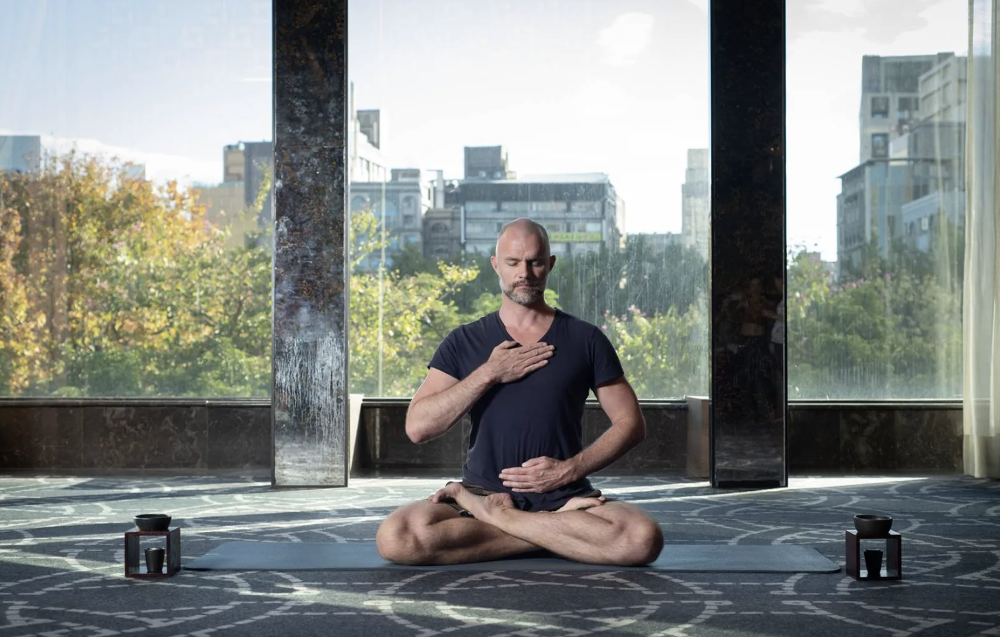

Introduction: How to relax effectively
See the following link for more information about the author: about me
Name: Kaining Zhao
Gu id: kz243
Research Background
In today’s fast-paced modern society, individuals are frequently confronted with significant life stresses. These pressures can arise from work responsibilities, academic demands, social interactions, family obligations, and various challenges of daily life. Simultaneously, the widespread use of electronic devices, information overload, and the prevalence of social media add an additional layer of stress to individuals’ lives. This high-stress lifestyle can often lead to anxiety, depression, physical discomfort, and health issues.
In this context, relaxation has become a critical factor in maintaining both physical and mental well-being. Relaxation not only aids in relieving bodily tension and fatigue but also enhances emotional tranquility, improves sleep quality, boosts resilience to stress, and promotes healthier lifestyles. However, effective relaxation is more than just reducing fatigue; it also involves learning to manage and cope with the everyday pressures in order to better deal with challenges and important tasks.
As such, researching how to efficiently relax has emerged as an essential endeavor. Understanding various relaxation methods, investigating their physiological and psychological effects, exploring individual differences, and identifying suitable relaxation strategies for diverse individuals are all indispensable components of helping people navigate the stresses of modern life more effectively. This study aims to delve into various aspects of relaxation, offering valuable insights and recommendations to enhance quality of life, promote health, and foster happiness.

Research Purpose
Relaxation is defined as both physical and mental, and most relaxation activities are done from these two aspects. I think there are many relaxation methods, such as meditation, yoga, deep breathing, spa baths, massage, art therapy, etc. Let’s understand how these relaxation methods work and try to analyze their true efficacy. Of course, I think these studies have individual differences to a large extent. For example, some people like sports and feel very comfortable after sports, while some people like to stay at home and watch movies, which means that some people prefer mental relaxation while others prefer physical relaxation. And some people are stressed and some people are not stressed. So consider that some methods work better for some people and may not work for others. I want to study the issue of relaxation from many aspects, and how to better communicate the importance of relaxation and its impact on the body to the public. I think there are also many possibilities for research methods, such as what data to collect to reflect the aspects that you want to study.
Research Questions
- Effectiveness of Different Relaxation Techniques:
What are the comparative effectiveness and outcomes of different relaxation techniques such as meditation, yoga, massage, and deep breathing in reducing stress and anxiety? Are certain relaxation methods more suitable for specific individuals or conditions?
- Physiological and Psychological Effects of Relaxation:
What physiological changes, such as heart rate, blood pressure, and hormonal levels, are observed during relaxation practices? How does relaxation impact emotional states and psychological well-being?
- Relationship Between Relaxation and Sleep:
How does relaxation practice influence sleep quality and duration? Can relaxation techniques be tailored to address sleep-related issues?
- Relaxation as a Stress Management Strategy:
To what extent does relaxation serve as an effective stress management strategy? How can individuals incorporate relaxation techniques into their daily lives to cope with chronic stress?
- Individual Differences in Relaxation Response:
What individual factors influence how people respond to specific relaxation methods? Are there personality traits or demographics that predict preferences for particular relaxation techniques?
- Cultural and Social Influences:
How do cultural beliefs and practices influence attitudes toward relaxation? What role do social support and interactions play in relaxation and mental well-being?
- Technology and Applications in Relaxation:
What is the impact of technology and relaxation applications in providing guidance and facilitating relaxation practices? How do virtual reality experiences and biofeedback technologies enhance relaxation experiences?
- Relaxation Education and Public Awareness:
What are effective strategies for educating the public about the importance of relaxation and its methods? Does relaxation education contribute to reducing societal stress levels?
- Long-Term Effects of Relaxation Practices:
Do individuals who regularly practice relaxation experience enduring benefits in terms of health and well-being? What are the long-term health and happiness implications of relaxation?
- Relaxation and Work Efficiency:
How does relaxation impact work efficiency, productivity, and creativity? How can relaxation practices be integrated into work environments to enhance performance?